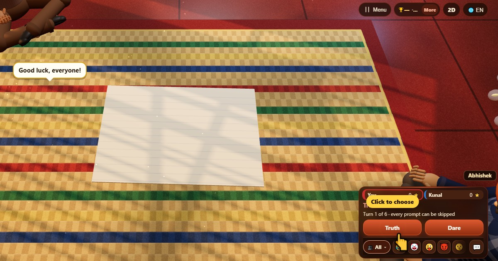

সত্যি না সাহস (Truth or Dare)
- 👥 2–10 খেলোয়াড়
- পার্টি গেম
- 🆓
বাংলা গাইড
সব বয়সের জন্য বন্ধুত্বপূর্ণ প্রশ্ন আর মজার কাজ। যেকোনোটা বাদ দেওয়া যায়।
English name: Truth or Dare

কীভাবে খেলবে
- নিজের দানে সত্যি বা সাহস বাছো।
- প্রশ্ন পড়ো, তারপর জোরে উত্তর দাও বা করে দেখাও।
- পয়েন্টের জন্য হয়ে গেছে চাপো, বা বাদ দাও চাপো। বাদ দিলে কখনো শাস্তি নেই।
- দান যায় পরের খেলোয়াড়ের কাছে।
পয়েন্ট কীভাবে মেলে
প্রতিটা বলা সত্যি আর করা সাহসে 1 পয়েন্ট। বাদ দিলে কিছু কাটে না।
কে জেতে
শেষ দানের পর সবচেয়ে বেশি পয়েন্ট যার সে জেতে, যদিও আসল মজা হাসিতে।
সাধারণ প্রশ্ন
প্রশ্নগুলো কি সবার জন্য ঠিক?
হ্যাঁ। এগুলো নিরীহ প্রশ্ন আর হালকা চ্যালেঞ্জ, যেমন নকল করা, জিভ জড়ানো বাক্য বা ছোট্ট নাচ।
আমি কি কোনো প্রশ্ন বাদ দিতে পারি?
হ্যাঁ, সবসময়, আর এতে কখনো পয়েন্ট কাটে না।
কীভাবে খেলবেন
- অতিথি হিসেবে: রেজিস্ট্রেশন নেই, লগইন নেই। নাম বেছে নিয়ে এখনই খেলুন।
- কম্পিউটারের সাথে: কেউ না থাকলে খালি জায়গা কম্পিউটার খেলোয়াড় পূরণ করে। সহজ, স্বাভাবিক বা কঠিন।
- অনলাইনে: সারা বিশ্বের খেলোয়াড়দের খোলা টেবিলে বসুন।
- কাছের বন্ধুদের সাথে: একটা ফোনে গেম শুরু করে কোড বা QR কোড পাঠান। বন্ধুরা নিজের ফোন থেকে যোগ দেয়।
- একটা ফোনে: পালা করে ফোন হাতবদল করুন: পুরো পরিবারের জন্য একটা ফোনই যথেষ্ট।
অন্য ভাষা
- हिन्दी: ट्रुथ ऑर डेयर (सच या हिम्मत)
- Hinglish: Truth or Dare (Sach ya Himmat)
- Español: Verdad o reto
- Português: Verdade ou desafio
- Français: Action ou vérité
- Deutsch: Wahrheit oder Pflicht
- Bahasa Indonesia: Truth or Dare
- Türkçe: Doğruluk mu Cesaret mi
- Italiano: Obbligo o verità
- 日本語: 真実か挑戦か
- 한국어: 진실 혹은 도전
- 中文: 真心话大冒险
- Русский: Правда или действие
- اردو: سچ یا ہمت
- नेपाली: सत्य कि साहस
- English: Truth or Dare · পুরো নিয়ম (ইংরেজি)
খেলার আইডিয়া
সব গেম


ChitPlay-তে আসল টাকা, বাজি বা পুরস্কার নেই। পয়েন্টের কোনো মূল্য নেই।